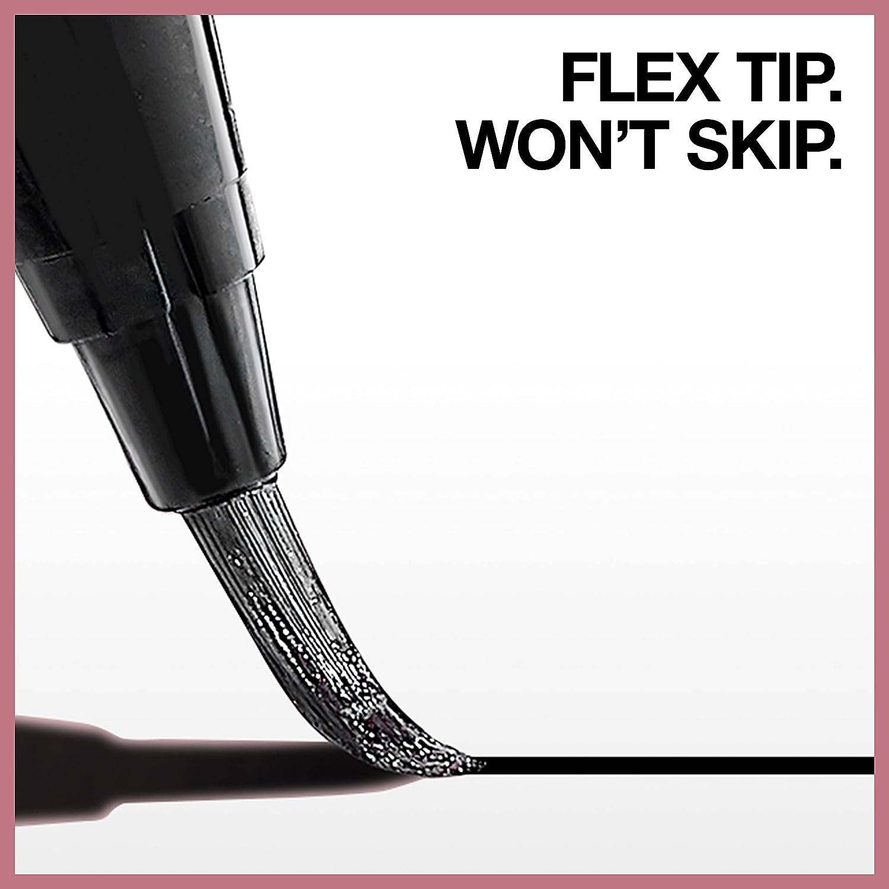
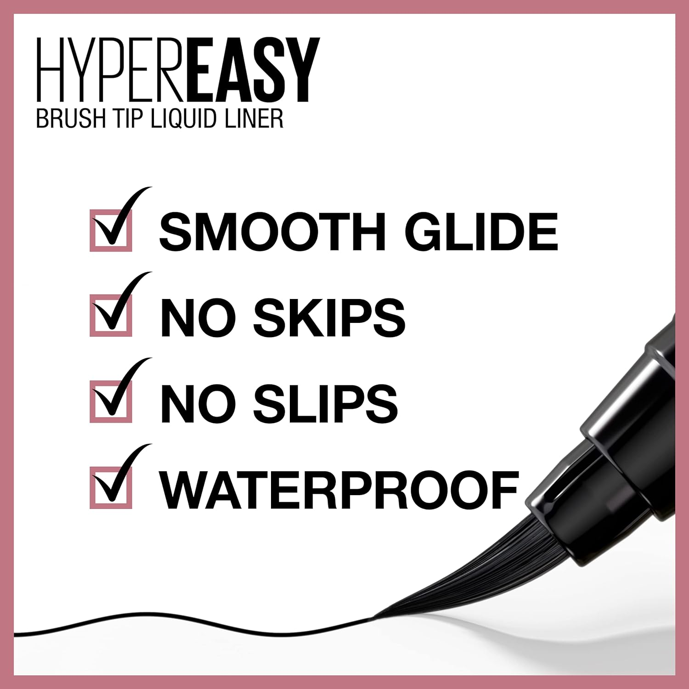

Maybelline Hyper Easy Liquid Pen No-Skip Eyeliner, Satin Finish, Waterproof Formula, Pitch Black, 0.018 Fl Oz
Liquid Eyeliner: Introducing liquid liner minus the skips, slips, gaps and struggle; With its hyper easy brush tip, this liquid eyeliner delivers the smoothest glide on your eyelid, fitting to the shape of your eye Flex-Tip Brush: The revolutionary flex tip brush and custom hexagonal grip gives optimal control and easy, stable application; It lasts up to 24 hours with intense color that doesn’t smudge Maybelline Is The Eye Expert: Whatever your signature eye look, natural or dramatic, Maybelline helps create looks that draw eyes; With a broad selection of pencil and liquid eyeliners, highly pigmented eyeshadows, iconic mascara, and eyebrow makeup Create any look with Maybelline: foundation, BB creams, concealers, and setting powders for the perfect canvas, eye shadows, mascara, brow pencils, and eyeliners for any eye look and lip products, from showstopping matte lipstick to a plumping lip gloss Remove Maybelline Makeup With Micellar Water: Use Garnier Micellar Water as a gentle makeup remover at night, and as a facial cleanser in the morning to prep skin for Maybelline makeup
Quantity:
$6.89